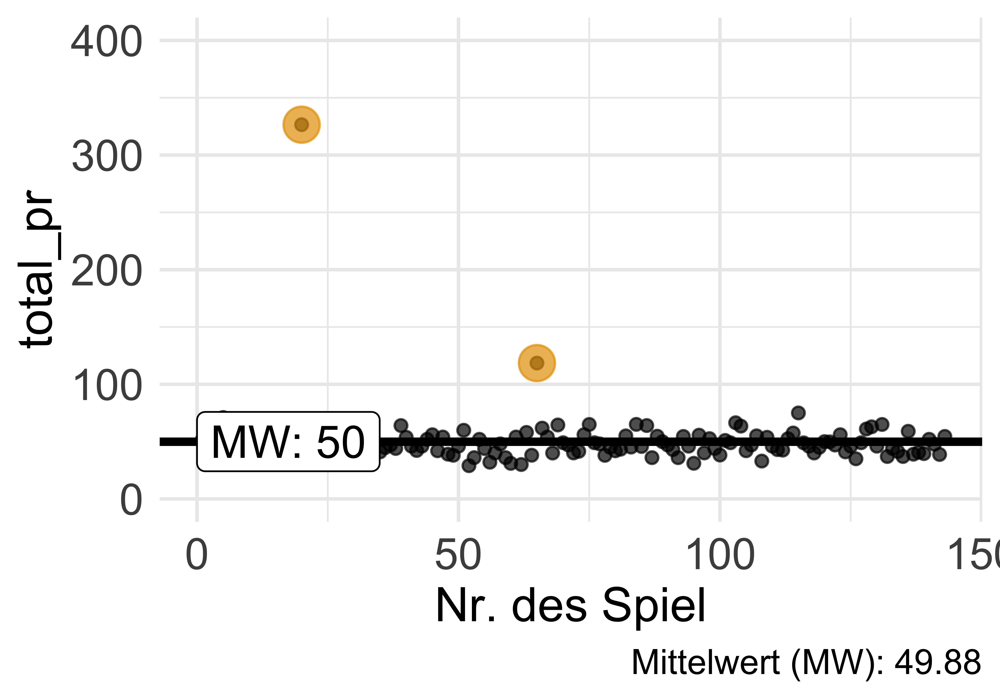
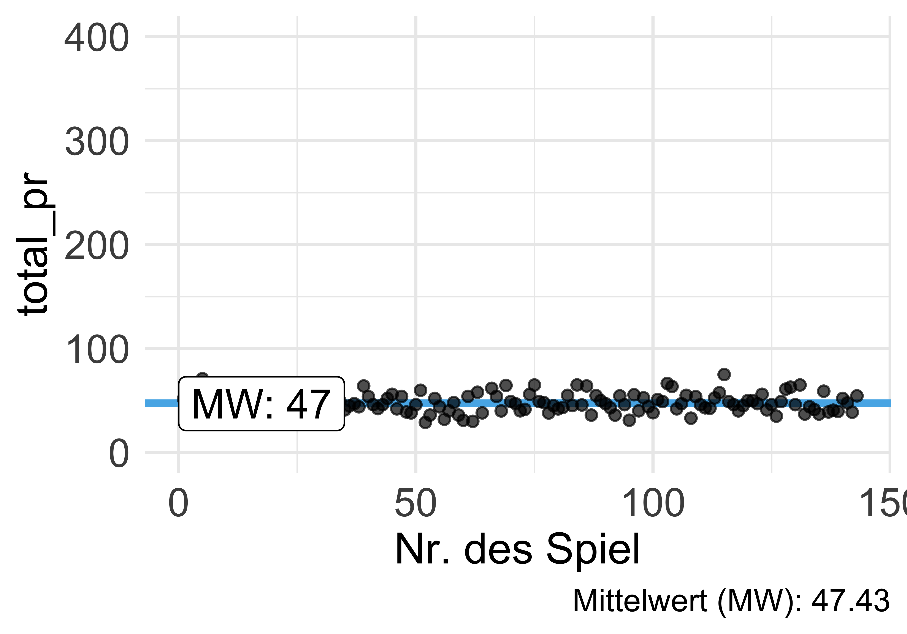

7 Punktmodelle 1
7.1 Lernsteuerung
7.1.1 Standort im Lernpfad
Abbildung 1.2 zeigt den Standort dieses Kapitels im Lernpfad und gibt damit einen Überblick über das Thema dieses Kapitels im Kontext aller Kapitel.
7.1.2 Lernziele
- Sie können gängige Arten von Lagemaße definieren.
- Sie können erläutern, inwiefern man ein Lagemaß als ein Modell hernehmen kann.
- Sie können Lagemaße mit R berechnen.
7.1.3 Benötigte R-Pakete
In diesem Kapitel benötigen Sie folgende R-Pakete.
7.1.4 Benötigte Daten
mariokart <- read.csv("https://vincentarelbundock.github.io/Rdatasets/csv/openintro/mariokart.csv")7.2 Mittelwert als Modell
Der klassische Mittelwert (arithmetisches Mittel) ist ein prototypisches Beispiel für ein Modell in der Statistik.
Übungsaufgabe 7.1 Welche Vorstellung haben Sie, wenn Sie hören, dass der “typische deutsche Mann†1,80m groß ist (Roser, Appel, und Ritchie 2013)?
- Die Hälfte der Männer ist größer als 1,80m, die andere Hälfte kleiner.
- Das arithmetische Mittel der Männer beträgt 1,80m.
- Die meisten Männer sind 1,80m groß.
- Etwas anderes.
- Keine Ahnung!\(\square\)
Übungsaufgabe 7.2 Laut dieser Quelle beträgt der Wert der mittleren Größe deutscher Frauen etwa 1,66m, also 14cm weniger als bei Männern. Ist das viel?
- ja
- nein
- kommt drauf an
- weiß nicht\(\square\)
Beispiel 7.1 (Beispiel zum Mittelwert) Ein Statistikkurs besteht aus drei Studentinnen: Anna, Berta und Carla. Sie haben gerade ihre Noten in der Klausur erfahren. Anna hat eine 1, Berta eine 2 und Carla eine 3. Der Durchschnitt (\(\varnothing\)) beträgt: 2.
🧑‍🎓 Zu easy!
👨‍🏫 Schon gut! Chill mal. Wird gleich interessanter.
Die Rechenregel zum Mittelwert lautet:
- Addiere alle Werte
- Teile durch die Anzahl der Werte
- Fertig. 😄
Etwas abstrakter kann man Beispiel 7.1 in folgendem Schaubild darstellen, s. Gleichung 7.1.
\[ \begin{array}{|c|} \hline \\ \\ \square \\ \hline \end{array} + \begin{array}{|c|} \hline \\ \square \\ \square \\ \hline \end{array} + \begin{array}{|c|} \hline \square \\ \square \\ \square \\ \hline \end{array} = 3 \cdot \begin{array}{|c|} \hline \\ \square \\ \square \\ \hline \end{array} \tag{7.1}\]
Der Nutzen des Mittelwerts liegt darin, dass er uns ein Bild gibt (ein Modell ist!) für die “typische Note†im Statistikkurs, s. Gleichung 7.2.
\[\begin{array}{|c|} \hline \\ \\ \square \\ \hline \end{array} + \begin{array}{|c|} \hline \\ \square \\ \square \\ \hline \end{array} + \begin{array}{|c|} \hline \square \\ \square \\ \square \\ \hline \end{array} \qquad \leftrightarrow \qquad \underbrace{\begin{array}{|c|} \hline \\ \square \\ \square \\ \hline \end{array}}_{\text{"typischer Vertreter"}} \tag{7.2}\]
Der Nutzen des Mittelwerts liegt darin, dass er eine Datenreihe zu einen “typischen Vertreter†zusammenfasst. Er ist typisch in dem Sinne, als dass die Werte aller Merkmalsträger in gleichem Maße einfließen. Er gibt uns eine (mögliche) Vorstellung (ein Modell!), wie wir uns die Werte der Datenreihe vorstellen sollen.
Eine nützliche Anschauung zum Mittelwert ist die Vorstellung des Mittelwerts als eine ausbalancierte Wippe, s. Abbildung 7.1.
In “Mathe-Sprech†bezeichnet man den Mittelwert häufig mit \(\bar{x}\) und schreibt die Rechenregel so, s. Gleichung 7.3.
\[\bar {x} =\frac{1}{n} \sum_{i=1}^{n}{x_{i}}=\frac {x_{1}+x_{2}+\dotsb +x_{n}} {n} \tag{7.3}\]
Definition 7.1 (Mittelwert) Der Mittelwert von \(X\), präziser: das arithmetische Mittel, ist definiert als die Summe der Elemente von \(X\) geteilt durch deren Anzahl, \(n\).$
Da der Mittelwert eine zentrale Rolle spielt in der Statistik, sollten wir ihn uns noch etwas genauer anschauen. In s. Abbildung 7.2 sehen wir die Noten von (dieses Mal) vier Studentis. Die gestrichelte horizontale Linie zeigt den Mittelwert der vier Noten. Die schwarzen Punkte sind die Daten, in dem Fall die einzelnen Noten. Die vertikalen Linien zeigen die Abweichungen der Noten zum Mittelwert. Bezeichnen wir die Abweichung - auch als “Fehlerâ€, “Rest†oder “Residuum†bezeichnet - der \(i\)-ten Person mit \(e_i\) (e wie “Fehler) und die \(i\)-te Note mit \(x_i\), so können wir festhalten:
\[x_i = \bar{x} + e_i\]
Einfacher ausgedrückt:
\[\text{Daten} = \text{Modell} + \text{Rest}\]
Der Mittelwert ist hier unser Modell der Daten. Wie gesagt: Ein Modell ist eine vereinfachte (zusammengefasste) Beschreibung einer Datenreihe.
Um Modelle darzustellen, wird in der Datenanalyse häufig folgende Art von Modellgleichung verwendet:
\[\hat{y} \sim m\]
Lies: “Der Modellwert \(\hat{y}\) ist eine Funktion des Modells (m)â€. Der Kringel “~â€1 soll also hier heißen “… ist eine Funktion von …”.
Mit \(\hat{y}\) sind die vorhergesagten bzw. die zu erklärende Variable2 gemeint.
Das “Dach†über dem \(y\) bedeutet “vorhergesager Y-Wert†oder “Y-Wert laut dem Modellâ€.
Der tatsächliche, beobachtete Wert \(y\) setzt sich zusammen aus dem Modellwert (m) plus einem Fehler (e wie error):
\[y = m + e\]
Anstelle von \(m\) schreibt ma nauch \(\hat{y}\) (“y-Dachâ€). bedeutet der “vorhergesagte y-Wert laut einem Modellâ€.
In diesem Fall ist das Modell einfach gleich dem Mittelwert (und nicht irgendeiner Funktion des Mittelwerts), so dass wir schreiben können:
\[y = \bar{x} + e\]
Die Zielvariable \(Y\) wird also durch ihren eigenen Mittelwert erklärt, außer gehen wir von einem Fehler \(e\) in unseren Modellvorhersagen aus. Nobody is perfect. In späteren Kapiteln werden wir andere Variablen heranziehen, um die Zielvariable zu erklären. Würden wir z.B. sagen wollen, dass wir \(Y\) als Funktion einer Variable \(X\) erklären, so würden wir schreiben:
\[\bar{y} \sim x\] Da wir im Moment aber keine andere Variablen bemühen, um \(Y\) zu erklären schreibt man auch:
\[\bar{y} \sim 1\]
Diese Schreibweise sieht verwirrend aus. Die \(1\) soll aber einfach zeigen, dass wir keine andere Variable zur Erklärung von \(Y\) verwenden, daher steht hier kein Buchstabe, sondern eine einfache \(1\).
Beispiel 7.2 (Noten, Mittelwert und Abweichung) Vier Studentis Anna, Berta, Carl, Dani haben ihre Statistik-Klausur zurückbekommen. Die Noten sehen Sie in Abbildung 7.2. Außerdem ist der Mittelwert (gestrichelte horizontale Linie) sowie die Abweichungen der einzelnen Noten vom Mittelwert eingezeichnet.\(\square\)
Schauen Sie sich die Abweichungsbalken3 in Abbildung 7.2 einmal genauer an.

Jetzt stellen Sie sich vor, Sie würden die vom Mittelwert nach oben ragenden Balkenlängen aneinanderlegen. Sehen Sie das vor Ihrem geistigen Auge? Jetzt legen Sie auch noch die Abweichungsbalken, die nach unten ragen aneinander, aneinander. Wer viel Phantasie hat, erkennt (sieht) jetzt, dass die Gesamtlänge der “Balken nach oben†identisch ist zur Gesamtlänge der nach “unten ragenden Balkenâ€, vgl. Abbildung 7.1.
Präziser ausgedrückt und ohne Ihre Phantasie zu strapazieren (Gleichung 7.4):
Die Summe der Abweichungen vom Mittelwert ist Null.
Übungsaufgabe 7.3 Was schätzen Sie, wie hoch das mittlere Vermögen des Haushalte in Deutschland in etwa ist?4)
- 50.000 Euro
- 100.000 Euro
- 150.000 Euro
- 200.000 Euro
- 250.000 Euro\(\square\)
Beispiel 7.3 (Der reichste Mensch der Welt in Ihrem Hörsaal) Kommt der wertvollste Fußballspieler der Welt in Ihren Hörsaal, sagen wir, es ist Kylian Mbappé5. Das Jahreseinkommen mit einem Jahreseinkommen von ca. 120 Millionen Euro6.
🦹‍♂️ Hey Leute, wie geht’s denn so! Wie viel Kohle verdient ihr eigentlich so?
🧑‍🎓 Äh, wir studieren und verdienen fast nix!
Die 100 Studis im Hörsaal schauen verdattert aus der Wäsche: Was ist das für eine komische Frage!? Aber zumindest verteilt der Fußballspieler Autogramme.
Übungsaufgabe 7.4 (Mittleres Einkommen im Hörsaal, mit Kylian Mbappé) Schätzen Sie - im Kopf - das mittlere Vermögen im Hörsaal, gehen Sie davon aus, dass alle der 100 Studentis jeweils 1000 Euro im Jahr verdienen.
In R kann man das mittlere Einkommen (präziser: das arithmetische Mittel des Einkommenss) wie folgt berechnen.7
1 Million hat 6 Nuller hinter der führenden Eins, das ist 1000 mal 1000. Anders gesagt: 1 Million = \(10^6 = 10^3 * 10^3\). In Taschenrechner oder Computerschreibweise: 1 Mio = 1e6, das 1e6 ist zu lesen als “1 Mal 10 mit 6 im Exponentenâ€.
Der Mittelwert im Hörsaal beträgt also 1,189,109 Euro. Ist das ein gutes Modell für das “typische†Vermögen im Hörsaal?
7.2.1 Der Mittelwert als lineares Modell
Man kann den Mittelwert als Gerade einzeichnen, s. Abbildung 7.3, bzw. als Gerade begreifen. Insofern kann man vom Mittelwert auch als lineares Modell sprechen.
Definition 7.2 (Lineares Modell) Ein lineares Modell verwendet eine Gerade als Modell der Daten.\(\square\)


Ein lineares Modell kann man in R so berechnen:
lm(einkommen ~ 1) # lm wie "lineares Modell" oder engl. "linear modell"
##
## Call:
## lm(formula = einkommen ~ 1)
##
## Coefficients:
## (Intercept)
## 1189109Der Befehl gibt als Koeffizient einen Wert zurück und zwar den Mittelwert von einkommen, s. oben. Dieser Wert wird als Achsenabschnitt (engl. intercept) bezeichnet, das wird verständlich, wenn man z.B. in Abbildung 7.3 sieht, dass die Gerade genau an diesem Punkt die Y-Achse schneidet.
Die Syntax des Befehls lm() sieht etwas merkwürdig aus. Ignorieren Sie das fürs Erste, wir besprechen das später (Kapitel 10) ausführlich.
7.3 Median als Modell
🧑‍🎓 Hey, der Mittelwert ist doch Quatsch! Das ist gar kein typischer Wert für die Menschen im Hörsaal. Weder für den Mbappé, noch für uns Studis!
👨‍🏫 Ja, da habt ihr Recht.
⚽ Die Welt ist schon ungerecht!
Bei (sehr) schiefen Verteilungen (s. Abbildung 7.4) ist der Mittelwert (sehr) wenig aussagekräftig, da er nicht mehr “typische†Werte für die Merkmalsträger beschreibt.
Abbildung 7.4 stellt die Verteilung einer mit normal skalierter Achse und einmal mit logarithmischer X-Achse. Die logarithmische X-Achse stellt den Unterschied von Mittelwert und Median deutlicher heraus als die “normale†(additive) Achse.


Der Mittelwert ist Hörsaal ist nicht typisch für die Menschen im Hörsaal: Weder für Mbappé, noch für die Studis. Genau genommen ist der Mittelwert in diesem Fall ziemlich nutzlos.
Der Mittelwert ist empfänglich für Extremwerte: Gibt es einen extremen Wert in einer Datenreihe, so spiegelt der Mittelwert stark diesen Wert wieder und weniger die Mehrheit der gemäßigten Werte. Man sagt, der Mittelwert ist nicht robust (gegenüber Extremwerten).
Beispiel 7.4 (Das Median-Einkommen einiger Studentinnen) Fünf Studentinnen tauschen sich über ihr Einkommen aus, s. Abbildung 7.5, links. Es handelt sich um eine schiefe Verteilung.


Wir könnten jetzt behaupten, dass Carla das typische Einkommen (für diese Datenreihe) aufweist, da es genauso viele Studentinnen gibt, die mehr verdienen, wie solche, die weniger verdienen.
\(\square\)
Definition 7.3 (Median) Merkmalsausprägung, die bei (aufsteigend) sortierten Beobachtungen in der Mitte liegt.
Der Median ist robust (gegenüber) Extremwerten: Fügt man Extremwerte zu einer Verteilung hinzu, ändert sich der Median zumeist (deutlich) weniger als der Mittelwert.
Abbildung 7.6 stellt den Median schematisch dar.

Bei geradem \(n\) werden die beiden mittleren Werte betrachtet und das arithmetische Mittel aus diesen beiden Werten gebildet.
Beispiel 7.5 Bei der Messreihe 1, 2, 3, 4, 5, 6, 8, 9 beträgt der Median 4.5.\(\square\)
Übungsaufgabe 7.5 (Emma wird reich) Durch ein geniales Patent wird Emma steinreich. Ihr Einkommen erhöht sich um das Hundertfache. Wie verändert sich der Median?8\(\square\)
Der Median ist robust, er verändert sich nicht oder kaum, wenn Extremwerte vorliegen.
Übungsaufgabe 7.6 (Wer ist mehr “mittel� Median oder Mittelwert?)
🧑‍🎓 Das arithmetische Mittel sollte Mittelwert heißen, weil es die Mitte von zwei Messwerten widerspiegelt, also z.B. von 1 und 10 ist die Mitte 5,5 - also genau beim Mittelwert!
👩‍🎓 Moment! Der Median zeigt den mittleren Messert! Links und rechts sind gleich viele Messwerte, wenn man die Werte der Größe nach sortiert. Also liegt der Median genau in der Mitte!
Nehmen Sie Stellung zu dieser Diskussion!\(\square\)
Beispiel 7.6 (Ein “mittlerer†Preis für Mariokart) Der Mittelwert (das arithmetische Mittel) und der Median für das Start-Gebot (start_pr) von Mariokart-Spielen sind nicht gleich, der Mittelwert ist höher als der Median.
mariokart <- read.csv("https://vincentarelbundock.github.io/Rdatasets/csv/openintro/mariokart.csv")
mariokart %>%
summarise(price_mw = mean(start_pr),
price_md = median(start_pr))Wie man sieht, ist der Mittelwert größer als der Median, s. Abbildung 7.7

Klaffen Mittelwert und Median auseinander, so liegt eine schiefe Verteilung vor. Ist der Mittelwert größer als der Median, so nennt man die Verteilung rechtsschief. Bei schiefen Verteilungen ist der Median dem Mittelwert als Modell für den “typischen Wert†vorzuziehen.
Übungsaufgabe 7.7 Was schätzen Sie, wie hoch das mediane Vermögen des Haushalte in Deutschland in etwa ist?9)
- 50.000 Euro
- 100.000 Euro
- 150.000 Euro
- 200.000 Euro
- 250.000 Euro\(\square\)
Übungsaufgabe 7.8 Was schätzen Sie, wie groß der Unterschied zwischen medianem und mittlerem (arithm. Mittel) des Jahreseinkommen deutscher Haushalte ungefähr ist?10)
- 1.000 Euro
- 2.000 Euro
- 3.000 Euro
- 4.000 Euro
- 5.000 Euro\(\square\)
7.4 Quartile
Der Median teilt eine Verteilung in eine untere und ein obere Hälfte. Er markiert sozusagen eine “50-Prozent-Marke†(der aufsteigend sortierten Beobachtungen). Betrachten wir einmal nur alle Spiele, die für weniger als 100 Euro verkauft wurden (total_pr, finales Verkaufsgebot), s. Abbildung 7.8. 50% aller Spiele wurden für weniger als ca. 46 Euro verkauft; 50% aller Spiele für mehr als 46 Euro.
Jetzt könnten wir nur die günstigere Hälfte betrachten und wieder nach dem Median fragen. Dieser “Median der günstigeren Hälfte†grenzt damit das insgesamt günstigste Viertel vom Rest der Verkaufsgebote ab. In unserem Datensatz liegt dieser Wert bei ca. 41 Euro. Entsprechend kann man nach dem Wert fragen, der das oberste Viertel vom Rest der Verkaufsgebote abtrennt. Dieser Wert liegt bei ca. 54 Euro.
Definition 7.4 (Quartile) Sortiert man die Daten aufsteigend, so nennt man den Wert, der das Viertel mit den kleisten Wert vom Rest der Daten trennt das erste Quartil (Q1, 25%). Den Median nennt man das zweite Quartil (Q2, 50%). Entsprechend heißt der Wert, der die drei Viertel kleinsten Werte vom oberen Viertel abtrennt, das dritte Quartil (Q3, 75%).\(\square\)
Beispiel 7.7 (Quartile des Verkaufsgebot) Abbildung 7.8 zeigt die Quartile für das Verkaufsgebot.\(\square\)
Jetzt könnte man sagen, hey, warum nur in 25%-Stücke die Verteilung aufteilen? Warum nicht in 10%-Schritten? Oder in 1%-Schritten oder in sonstigen Schnitten? Wo die Quartile in 25%-Schritten aufteilen, teilt in Quantil in \(p\)-Prozent-Schritten auf.
Definition 7.5 (Quantile) Ein p-Quantil ist der Wert, der von \(p\) Prozent der Werte nicht überschritten wird.\(\square\)

Quantile kann man in R so berechnen:
7.5 Lagemaße
🧑‍🎓 Was ist der Oberbegriff für Median, Mittelwert und so weiter?
👩‍🏫 Gute Frage! Wie würden Sie ihn nennen?
Definition 7.6 (Lagemaß) Ein Lagemaß oder Maß der zentralen Tendenz gibt einen Vorschlag, welchen Wert wir als typisch, normal, zu erwarten, repräsentativ oder mittel ansehen sollten.\(\square\)
Typische Lagemaße:
- Mittelwert (arithmetisches Mittel)
- Median
- Quartile
- Quantile
- Minimum (kleinester Wert)
- Maximum (größter Wert)
- Modus (häufigster Wert)
mariokart_lagemaße_total_pr <-
mariokart %>%
summarise(mw = mean(total_pr),
md = median(total_pr),
q1 = quantile(total_pr, .25),
q2 = quantile(total_pr, .5),
q3 = quantile(total_pr, .75),
min = min(total_pr),
max = max(total_pr))
mariokart_lagemaße_total_pr7.5.1 Gruppierte Lagemaße
Häufig möchte man Statistiken wie Lagemaße für mehrere Teilgruppen - z.B. Mittlere Körpergröße von Frauen vs. Mittlere Körpergröße von Männer - berechnen und dann vergleichen. Die dahinter stehende Forschungsfrage könnte lauten:
Unterscheidet sich die mittlere Körpergröße von Frauen und Männern?
Oder vielleicht:
Hat das Geschlecht einen Einfluss auf die Körpergröße?
Anders ausgedrückt:
Körpergröße \(y\) ist eine Funktion des Geschlechts \(G\).
Die Modellformel könnte also lauten:
\[y \sim G\]
Gruppierte Lagemaße lassen sich in R z.B. so berechnen:
mariokart_lagemaße_gruppiert <-
mariokart %>%
group_by(wheels) %>% # neue Zeile, der Rest ist gleich!
summarise(mw = mean(total_pr))
mariokart_lagemaße_gruppiertAbbildung 7.3 zeigt ein Beispiel für ungruppierte (links) bzw. gruppierte (rechts) Mittelwerte. Wie man in dem Diagramm sieht, kann das Residuum kleiner werden bei einer Gruppierung (im Vergleich zu einem ungruppierten, “globalen†Mittelwert).
Definition 7.7 (Punktmodell) Ein Modell, welches für alle Beobachtungen ein und denselben Wert annimmt (vorhersagt), heißt ein Punktmodell. Anders gesagt fasst ein Punktmodell eine Wertereihe (häufig ist das eine Tabellenspalte) zu einer einzelnen Zahl zusammen, einem “Punkt†in diesem Sinne, s. Gleichung 7.5.\(\square\)
\[\begin{array}{|c|} \hline \\ \hline \\\\\\ \hline \end{array} \qquad \rightarrow \qquad \begin{array}{|c|} \hline \\ \hline \hline \end{array} \tag{7.5}\]
Mittelwert, Median und Quartile sind Beispiele für Punktmodelle: Sie fassen eine Verteilung zu einem einzelnen Wert zusammen und geben uns ein “Bild†der Daten, machen Sie uns verständlich - sie sind uns ein Modell.
7.6 Wie man mit Statistik lügt
Mit Statistik kann man vortrefflich lügen, heißt es. Woran liegt das? Der Grund ist, dass die Statistik Freiheitsgrade lässt: Es gibt nicht nur einen richtigen Weg, um eine statistische Analyse durchzuführen. Viele Wege führen nach Rom.
Um Manipulationsversuche abzuwehren oder einfache Fehler und Unschärfen ohne böse Abwehr aufzudecken, gibt es ein probates Gegenmittel: Transparenz.
Stellen Sie hohe Anforderung an die Transparenz einer statistischen Analyse. Nur durch Nachprüfbarkeit können Sie sich von der Stichhaltigkeit der Ergebnisse und deren Interpretation überzeugen.
Hier ist eine (nicht abschließende!) Checkliste, was Sie nachprüfen sollten, um die Belastbarkeit einer Analyse sicherzustellen Wicherts u. a. (2016):
7.7 Fazit
Beispiel 7.8 (Survival-Tipp) Eine Studentin aus dem dem Bachelorstudiengang “Angewandte Medien- und Wirtschaftspsychologie†mit Schwerpunkt Data Science berichtet ihre “Survival-Tipps†für Statistik.
- Wenn man mal nicht weiterkommt hilft es auch mal ein paar Tage Abstand von R und Statistik zu nehmen.
- Sich während des Semesters neue Begriffe und ihre Erklärung zusammenschreiben.
- Mit KommilitonInnen austauschen oder in höheren Semestern nach Tipps fragen.\(\square\)
👩‍🎓 Irgendwie kann ich mir R-Code so schlecht merken.
👩‍🏫 Frag doch mal ChatGPT, da bekommt man auch R-Code ausgegegeben.
7.8 Aufgaben
Ein Teil der Aufgaben kann Stoff beinhalten, den Sie noch nicht kennen, aber später kennenlernen. Ignorieren Sie daher Aufgaben(teile) mit (noch) unbekannte Stoff.
- Kennwert-robust
- mw-berechnen
- mariokart-max2
- nasa01
- nasa02
- mariokart-mean1
- wrangle10
- summarise01
- mariokart-max1
- Schiefe1
- mariokart-mean2
- summarise03
- mariokart-mean4
- mariokart-mean3
- summarise02
Schauen Sie sich auch mal auf Datenwerk die Aufgaben zu z.B. dem Tag EDA an.
7.9 Literatur
die sog. “Tildeâ€â†©ï¸
AV, Output-Variable, Zielvariable↩︎
Residuen, Fehler; häufig mit \(e\) wie error bezeichnet↩︎
Quelle: https://www.transfermarkt.de/spieler-statistik/wertvollstespieler/marktwertetop, 2023-03-19↩︎
Quelle: https://www.einkommenmagazin.de/kylian-mbappe-einkommen/, 2023-03-19↩︎
Die Details der Syntax, z.B. der Befehl
rep()sind von geringer Bedeutung.↩︎Er bleibt gleich, verändert sich also nicht.↩︎
Quelle: Wikipedia, Abruf 2023-04-19, der Unterschied beträgt knapp 3000 Euro laut der Quelle↩︎